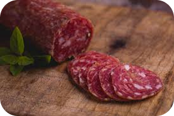

Feiras de agricultura familiar são eventos essenciais para promover produtos locais, fortalecer a economia regional e incentivar práticas agrícolas sustentáveis. Elas conectam produtores e consumidores, oferecendo alimentos frescos e saudáveis diretamente do campo para a mesa.
Na imagem ao lado vemos um homem da cidade conversando com a mulher do campo, isso é muito importante. Às vezes rever um velho amigo, ou conhecer gente nova.

Uma das principais coisas que movem uma feira de agricultura são os alimentos, sabor e qualidade que muitas vezes só se encontra em uma feira. Muitas pessoas que moram na cidade preferem comprar na feira seja por gosto ou fortalecer o comércio local.